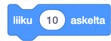

Lause
Ohjelmoinnissa lause on komento tai ohje, jonka ohjelmoija antaa tietokoneelle. Ohjelma rakentuu lauseista, joilla ohjelmoija antaa tietokoneelle käskyjä, joita tietokone sitten toteuttaa. Tietokoneohjelma koostuu siis joukosta lauseita. Jos Scratchissä koodipalikkassa on komento, se on lause.
Esimerkkejä lauseista Scratchissä
Tämä Liike-palikoiden palikka siirtää hahmoa tiettyyn määrän askelia. Askel on hyvin lyhyt matka (yksi pikseli). Jos kirjoitat negatiivisen numeron (kuten -10), hahmo menee vastakkaiseen suuntaan. Kaksoisnapauttamalla lohkoa voit suorittaa koodin.
Tämä palikka Ulkonäkö-palikoissa sanoo aukkoon kirjoitetut sanat (Tässä tapauksessa "Hei!") puhekuplassa kahden sekunnin ajan.